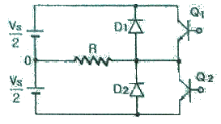
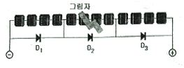
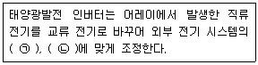
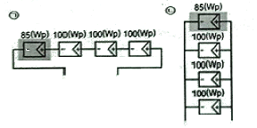
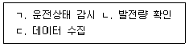
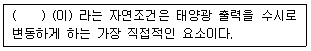

신재생에너지발전설비기능사 (2014-10-11 기출문제)
1과목: 임의구분
1. 태양광 인버터와 연결된 태양전지 어레이들의 스트링 사이의 출력전압 불균형을 방지하기 위해 접속함이나 모듈의 단자함에 설치하는 것은?(오류 신고가 접수된 문제입니다. 반드시 정답과 해설을 확인하시기 바랍니다.)
- 바이패스 다이오드
- 배선용 차단기
- 역전류방지 다이오드
- 서지 흡수기
(정답률: 57%)

2. 태양광을 이용한 발전시스템의 특징 및 구성에서 태양광 발전의 장점이 아닌 것은?
- 에너지원이 무한하다.
- 설비의 보수가 간단하고 고장이 적다.
- 장수명으로 20년 이상 활용이 가능하다.
- 넓은 설치 면적이 필요하다.
(정답률: 92%)
3. 특고압 22.9kV로 태양광발전시스템을 한전선로에 계통연계 할 때 순서로 옳은 것은?
- 인버터 → 저압반 → 변압기 → 고압반 → MOF → LBS
- 인버터 → 저압반 → LBS → MOF → 변압기 → 고압반
- 인버터 → 변압기 → 저압반 → 고압반 → MOF → LBS
- 인버터 → LBS → MOF → 저압반 → 변압기 → 고압반
(정답률: 81%)
4. 주택 등 소규모 태양광 발전소의 구성요소가 아닌 것은?
- 송전설비
- 인버터
- 분전함
- 스트링 차단기
(정답률: 79%)
5. 태양광 발전시스템에서 가격이 저렴하여 주로 사용되는 축전지는?
- 납축전지
- 망간전지
- 알칼리축전지
- 기체전지
(정답률: 91%)
6. 태양전지 모듈의 바이패스 다이오드 소자는 대상 스트링 공칭 최대출력 동작전압의 몇 배 이상 역내압을 가져야 하는가?
- 1.5 배
- 2 배
- 2.5 배
- 3배
(정답률: 80%)
7. 태양전지 어레이와 인버터의 접속방식 아닌 것은?
- 중앙 집중형 인버터 방식
- 스트링 인버터 방식
- 마스터-슬레이브 방식
- 다중접속 인버터 방식
(정답률: 69%)
8. 신재생에너지 분류에 포함되지 않는 것은?
- 태양열
- 바이오매스
- 원자력
- 풍력
(정답률: 88%)
9. 뇌 서지의 피해로부터 PV시스템을 보호하기 위한 대책이 아닌 것은?
- 피뢰소자를 어레이 주회로 내부에 분산시켜 설치하고 접속함에도 설치한다.
- 저압배전선에서 침입하는 뇌 서지에 대해서는 분전반에 피뢰소자를 설치한다.
- 뇌우 다발지역에서는 교류전원측으로 내뢰 트랜스를 설치한다.
- 접속함에 비상전원용 축전지를 설치한다.
(정답률: 66%)
10. 인버터 스위칭 주기가 10ms이면 주파수는 몇 Hz인가?
- 10
- 20
- 60
- 100
(정답률: 80%)
11. 단결정 실리콘과 다결정 실리콘에 대한 설명이다. 다음 중 옳은 것은?
- 단결정에 비해 다결정의 순도가 높다.
- 단결정에 비해 다결정의 효율이 낮다.
- 단결정에 비해 다결정의 원가가 높다.
- 단결정에 비해 다결정의 제조공정이 복잡하다.
(정답률: 78%)
12. 그림은 2.4Ω의 저항 부하를 갖는 단상 반파브리지 인버터이다. 직류 입력전압(Vs)이 48V이면 출력은 몇 W 인가?

- 240
- 480
- 720
- 960
(정답률: 67%)
13. 태양광발전시스템의 인버터에서 태양전지 동작점을 항상 최대가 되도록 하는 기능은 무엇인가?
- 단독운전 방지기능
- 자동운전 정지기능
- 최대전력 추종기능
- 자동전압 조정기능
(정답률: 86%)
14. 태양전지 또는 태양광발전시스템의 성능을 시험할 때 표준 시험조건(Standard Test Condition)에서 적용되는 기준온도는?
- 18℃
- 20℃
- 22℃
- 25℃
(정답률: 87%)
15. PV 모듈에 그림자가 생겼을 때 출력이 감소하게 된다. 그림에서 D1, D2, D3 명칭으로 옳은 것은?

- 역전압방지 다이오드
- 바이패스 다이오드
- 역전류방지 다이오드
- 과전압방지 다이오드
(정답률: 86%)
16. 다음 () 안에 들어갈 내용으로 옳은 것은?

- ㉠ 역률 ㉡ 전압
- ㉠ 부하 ㉡ 전류
- ㉠ 주파수 ㉡ 전압
- ㉠ 주파수 ㉡ 전류
(정답률: 83%)
17. 다음은 직병렬 어레이 회로를 나타내고 있다. 그림에서 음영 발생으로 흑색 부분 모듈 출력 값이 85W를 나타내고 있을 때 각 회로에서의 총 출력 값은 얼마인가?

- ㉠ 385 W, ㉡ 385 W
- ㉠ 340 W, ㉡ 385 W
- ㉠ 385 W, ㉡ 340 W
- ㉠ 85 W, ㉡ 385 W
(정답률: 74%)
18. 태양광 발전량의 제한요인에 관한 설명으로 옳은 것은?
- 우리나라 일사량은 전 지역에 동일하다.
- 계절 중 겨울에 발전량이 가장 많다.
- 태양광이 모듈표면에 20°로 쬐일 때 발전량이 최대이다.
- 태양전지 어레이를 정남향으로 배치시 발전량이 최대이다
(정답률: 86%)
19. 태양전지 모듈 뒷면에 기재된 전기적 출력 특성으로 틀린 것은?
- 온도계수(T0)
- 개방전압(Voc)
- 단략전류(Isc)
- 최대출력(Pmpp)
(정답률: 77%)
20. 금속표면에 파장이 짧은 빛을 비추면 전자가 튀어나오는 현상을 무엇이라 하는가?
- 제백효과
- 펠티어효과
- 광전효과
- 열전효과
(정답률: 92%)
2과목: 임의구분
21. 지상용 태양광발전시스템의 태양전지 어레이 설치방식에서 발전량을 가능한 최대로 발전하기 위한 설치방식은?
- 경사가변형의 반고정식
- 경사 고정식
- 단축 추적식
- 양축 추적식
(정답률: 76%)
22. 태양전지 어레이의 출력전압이 440V인 경우에 해당하는 기계기구의 접지공사로 옳은 것은?
- 제1종 접지공사
- 제2종 접지공사
- 제3종 접지공사
- 특별 제3종 접지공사
(정답률: 79%)
23. 태양전지 모듈간의 배선작업이 완료된 후 확인하여야 할 사항으로 틀린 것은?
- 전압 및 극성의 확인
- 일사량 및 온도의 확인
- 비접지의 확인
- 단락전류의 확인
(정답률: 79%)
24. 태양전지 어레이를 지상에 설치하여 배선 케이블을 매설할 때는 케이블을 보호처리하고, 그 길이가 몇 m를 넘는 경우에 지중함을 설치하는가?
- 10 m
- 15 m
- 30 m
- 50 m
(정답률: 74%)
25. 태양전지 배선을 지중배관을 통하여 직접 매설하여 시설 하는 경우 중량물의 압력을 받을 우려가 있는 경우에 몇 m 이상의 깊이로 매설해야 하는가?(2021년 변경된 KEC 규정 적용됨)
- 0.5 m
- 1 m
- 1.2 m
- 1.5 m
(정답률: 79%)
26. 태양전지 어레이 설치공사에 있어서 감전 방지책으로 적절하지 않은 것은?
- 작업 전 태양전지 모듈의 표면에 차광시트를 붙여 태양광을 차단한다.
- 일반용 고무장갑을 낀다.
- 절연처리 된 공구를 사용한다.
- 강우 시 작업을 하지 않는다.
(정답률: 90%)
27. 태양광발전시스템의 설치를 완료하였지만, 현장에서 직류아크가 발생하는 경우가 있는데 아크발생의 원인이 아닌 것은?
- 태양전지 모듈이 용량 이상으로 발전하기 때문에 아크가 발생한다.
- 전선 상호간의 절연불량으로 아크가 발생할 수 있다.
- 케이블 접속단자의 접속불량으로 인하여 아크가 발생할 수 있다.
- 절연불량으로 단락되어 아크가 발생할 수 있다.
(정답률: 77%)
28. 경사형 지붕에 태양전지 모듈을 설치할 때 유의하여야 할 사항으로 옳지 않은 것은?
- 태양전지 모듈을 지붕에 밀착시켜 부착해야 한다.
- 모듈 고정용 볼트, 너트 등은 상부에서 조일 수 있어야 한다.
- 가대나 지지철물 등의 노출부는 미관과 안전을 고려 최대한 적게 한다.
- 태양전지 모듈은 한 장씩 쉽게 교체할 수 있어야 한다.
(정답률: 83%)
29. 태양전지 모듈의 설치방법으로 적합하지 않은 것은?
- 태양전지 모듈의 설치는 가대의 하단에서 상단으로 순차적으로 조립한다.
- 태앙전지 모듈의 이동시 2인 1조로 한다.
- 태양전지 모듈의 직렬매수는 직류 사용전압 또는 인버터의 입력전압 범위에서 선정한다.
- 태양전지 모듈과 가대의 접합 시 불필요한 개스킷 등은 사용하지 않는다.
(정답률: 78%)
30. 표준시험 조건(STC)에서 직류 전원 케이블 굵기 산정에 필요한 최대발생전류는 약 몇 A 인가? (단, 태양광발전시스템 어레이 단락전류는 6.83A 이다.)
- 7.51 A
- 8.51 A
- 10.25 A
- 13.66 A
(정답률: 57%)
31. 태양전지 모듈이 충분히 절연되었는지 확인하기 위한 습도 조건은?
- 상대습도 75% 미만
- 상대습도 80% 미만
- 상대습도 85% 미만
- 상대습도 90% 미만
(정답률: 68%)
32. 태양광 발전설비로서 용량이 1000kW 미만인 경우 안전관리업무를 외부에 대행시킬 수 있는 점검은?
- 일상점검
- 정기점검
- 임시점검
- 사용전검사
(정답률: 72%)
33. 태양광발전 시스템의 성능평가를 위한 측정요소가 아닌 것은?
- 구성요인의 성능
- 응용성
- 발전성능
- 신뢰성
(정답률: 76%)
34. 태양광 모니터링 시스템의 목적으로 옳은 내용을 모두 선택한 것은?

- ㄱ, ㄴ
- ㄱ, ㄷ
- ㄴ, ㄷ
- ㄱ, ㄴ, ㄷ
(정답률: 87%)
35. 전기안전관리 대행범위가 700kW 초과인 전기설비 규모인 경우 점검 주기로 옳은 것은?
- 월 1회 이상
- 월 2회 이상
- 월 3회 이상
- 월 4회 이상
(정답률: 63%)
36. 태양전지 어레이 회로의 절연내압 측정에 대한 설명으로 옳은 것은?
- 최대사용전압의 1.5배 직류전압을 10분간 인가하여 절연파괴 등 이상 확인
- 최대사용전압의 2.5배 직류전압을 10분간 인가하여 절연파괴 등 이상 확인
- 최대사용전압의 3.5배 직류전압을 10분간 인가하여 절연파괴 등 이상 확인
- 최대사용전압의 4.5배 직류전압을 10분간 인가하여 절연파괴 등 이상 확인
(정답률: 81%)
37. 다음 설명의 () 안에 알맞은 내용은?

- 풍속
- 습도
- 일사량
- 강우량
(정답률: 90%)
38. 태양광발전시스템의 계측에서 검출기로 검출된 데이터를 컴퓨터 및 먼 거리에 설치한 표시장치에 전송하는 경우 사용하는 것은?
- 검출기
- 신호변환기
- 연산장치
- 기억장치
(정답률: 85%)
39. 태양광 인버터에 대한 설명으로 옳지 않은 것은?
- 태양광 인버터는 계통연계형과 독립형으로 분류할 수 있다.
- 태양광 인버터는 최대전력점 추종 기능을 가지지 않는다.
- 태양광 인버터는 전력용반도체 스위치 소자를 이용하여 동작 한다.
- 태양광 인버터는 직류를 교류로 바꾸는 기능을 가지고 있다.
(정답률: 77%)
40. 인버터의 정상특성시험에 해당되지 않는 것은?
- 교류전압, 주파수 추종 시험
- 인버터 전력급변 시험
- 누설전류 시험
- 자동 기동·정지 시험
(정답률: 55%)
3과목: 임의구분
41. 인버터 모니터링시 태양전지의 전압이 “Solar Cell OV Fault”라고 표시되는 경우의 조치사항으로 맞는 것은?
- 태양전지 전압 점검 후 정상시 3분 후 재기동
- 태양전지 전압 점검 후 정상시 5분 후 재기동
- 태양전지 전압 점검 후 정상시 7분 후 재기동
- 태양전지 전압 점검 후 정상시 10분 후 재기동
(정답률: 80%)
42. 태양광 발전시스템의 태양전지 어레이의 접지저항 값은 몇 Ω 이하인가?
- 10
- 30
- 50
- 100
(정답률: 73%)
43. 정기점검 시 인버터의 절연저항 측정은 인버터의 입출력단자와 접지간의 절연저항은? (단, 측정전압은 직류 500V이다.)
- 10Ω 이상
- 100Ω 이상
- 0.2MΩ 이상
- 1MΩ 이상
(정답률: 75%)
44. 태양광 전기설비 화재의 원인으로 가장 거리가 먼 것은?
- 누전
- 단락
- 저전압
- 접촉부 과열
(정답률: 86%)
45. 태양전지 어레이의 육안점검 항목이 아닌 것은?
- 표면의 오염 및 파손
- 지붕재의 파손
- 접지저항
- 가대의 고정
(정답률: 88%)
46. 인버터 측정 점검항목이 아닌 것은?
- 절연저항
- 접지저항
- 수전전압
- 개방전압
(정답률: 65%)
47. 인버터 이상신호 조치방법 중 한전의 전압이나 주파수 이상으로 계통 점검 후 정상이 되면 몇 분 후에 재기동되어야 하는가?
- 5분
- 7분
- 9분
- 10분
(정답률: 78%)
48. 다음 중 태양광 발전시스템 관련 전기관계 법규가 아닌 것은?
- 전기설비기술기준
- 전기사업법
- 전기공사업법
- 전기안전관리법
(정답률: 63%)
49. 태양광 발전시스템의 절연저항 측정값이 틀린 것은?
- 대지전압 150V 이하 시 0.1MΩ 이상
- 대지전압 150V 초과 시 300V 이하 시 0.2MΩ 이상
- 사용전압 300V 초과 시 400V 이하 시 0.3MΩ 이상
- 사용전압 400V 초과 시 0.5MΩ 이상
(정답률: 72%)
50. 다음 중 추락방지를 위해 사용하여야 할 안전복장은?
- 안전모 착용
- 안전대 착용
- 안전화 착용
- 안전허리띠 착용
(정답률: 77%)
51. 발전소에서 생산된 전기를 배전사업자에게 송전하는 데 필요한 전기설비를 설치·관리하는 것을 주된 사업으로 하는 것은?
- 배전사업
- 발전사업
- 송전사업
- 전기사업
(정답률: 77%)
52. 고압 또는 특고압 전로에 시설한 과전류차단기의 퓨즈 중 고압전로에 사용하는 포장 퓨즈는 정격전류 2배의 전류로 몇 분 안에 용단되어야 하는가?
- 30
- 60
- 120
- 150
(정답률: 70%)
53. 개인대행자가 안전관리의 업무를 대행할 수 있는 태양광 발전설비의 용량은 몇 kW 미만인가?
- 250
- 500
- 750
- 1000
(정답률: 58%)
54. 신에너지 및 재생에너지 개발·이용·보급 촉진법에서 신·재생에너지 설비가 아닌 것은?
- 석유에너지 설비
- 태양에너지 설비
- 바이오에너지 설비
- 폐기물에너지 설비
(정답률: 86%)
55. 태양광 설비에 대한 설명으로 가장 옳은 것은?
- 태양의 열에너지를 변환시켜 전기를 생산하거나 에너지원으로 이용하는 설비
- 바람의 에너지를 변환시켜 전기를 생산하는 설비
- 수소와 산소의 전기화학 반응으로 전기 또는 열을 생산하는 설비
- 태양의 빛에너지를 변환시켜 전기를 생산하거나 채광에 이용하는 설비
(정답률: 85%)
56. 지중전선로를 직접 매설식에 의하여 시설하는 경우 차량 기타의 중량물의 압력을 받을 우려가 있는 장소의 매설 깊이는 몇 m 이상인가?(2021년 변경된 KEC 규정 적용)
- 0.6
- 1.0
- 1.5
- 2
(정답률: 76%)
57. 대통령령으로 정하는 바에 따른 신·재생에너지의 이용·보급을 촉진하는 보급사업에 해당되지 않는 것은?
- 신기술의 적용사업 및 시범사업
- 지방자치단체와 연계하지 아니한 보급사업
- 환경친화적 신·재생에너지 집적화단지 및 시범단지 조성사업
- 실용화된 신·재생에너지 설비의 보급을 지원하는 사업
(정답률: 84%)
58. 저압 가공인입선에 사용해서는 안 되는 전선은?
- 케이블
- 나전선
- 절연전선
- 다심형전선
(정답률: 76%)
59. 신·재생에너지의 기술개발 및 이용·보급을 촉진하기 위한 기본계획에 포함되어야 할 사항이 아닌 것은?
- 총전력생산량 중 신·재생에너지 발전량이 차지하는 비율의 목표
- 신·재생에너지원별 기술개발 및 이용·보급의 목표
- 시장기능 활성화를 위해 정부주도의 저탄소녹색성장추진
- 신·재생에너지 분야 전문인력 양성계획
(정답률: 69%)
60. 다음 중 녹색기술에 해당하지 않는 기술은?
- 온실가스 감축기술
- 에너지 이용 효율화 기술
- 전기설비 시설기술
- 청정 생산 기술
(정답률: 83%)